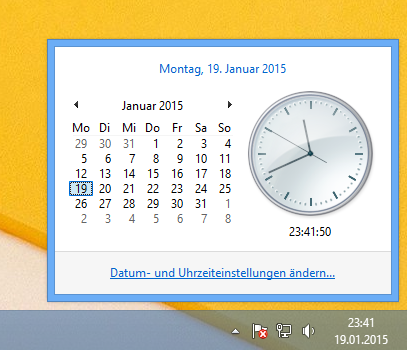

WBP#2 - SHA256, Flask, Safari, Keybase.io and more...

The Weekly Bucket Post goes into the second round. This week we have wrong sha256 hashes, problems with Safari and amongst other things an invitation to keybase.io!
sha256sum creates "wrong" hash - Recently I was wondering, why a SHA256 hash of the string password was listed in neither the Hash Toolkit nor the LeakDB databases. Surely someone must have used password as password somewhere!?
Turns out, password is of course in both those databases, what isn't listed though is password\n. The reason I fell into this trap, was because I forgot that the bash command echo always appends a newline unless you call it with the -n switch.
# Same strings
echo -ne "string\n" | sha256sum
echo "string" |sha256sum
# what you really want...
echo -n "string" | sha256sum
Browser Testing - Oh Safari, now I know why I don't use you... because I can't!
Last week, @MikeyJck was kind enough to let me know that Apple's Safari browser was asking for a client certificate when browsing on my site. While this is actually something I use on a few pages or subdomains, it should certainly not appear on the frontpage of this blog.
Since I don't own a Mac, I went looking for ways to (efficiently) test websites with Safari - so far without great results!
Safari was available for Windows once, but after version 5.1.7 Apple killed it and now it's only available for systems running OSX.
The alternatives I found are not really alternatives in my opinion, as they either build on said Windows version or on making screenshots of your page which doesn't help much either when you're trying to debug strange behaviour.
Running late on Windows 8 - For some reason my Windows 8.1 desktop was running an hour late. No matter what I did, it kept changing back to UTC, when it should be on UTC+1.
This seems to be a very well known problem in Windows, the reason for which is the default NTP servers Microsoft has set for their operating system.
By setting the NTP servers to pool.ntp.org, the clock jumped by one hour and displayed the correct time. What's interesting is that public posts about this problem where talking about a few minutes time difference. For me it was exactly one hour.
Windows 8 time settings (in german - had no choice!)

Youtube, MP3 and distribution of malicious code - Last week I found myself in need to use one of those "Youtube to MP3 downloaders", which I'm always kinda sceptical about. Not only is the sound quality crap, but obviously you have no control over what you're really downloading - and in most cases you don't really have a trustworthy brand behind it either.
Said situation spawned some food for thought. I know that malicious code can be stored in MP3, which really isn't something new. But I can't help but wonder if adding malicious sound tracks to youtube videos could make for a "good" distribution mechanism. Especially if you're trying target unsuspecting smartphone kiddies who're downloading their music from YT.
Keybase.io - There isn't much to say about keybase.io that isn't on the site itself already. It's pretty self explanatory and for everything else there is the FAQ. So I'm just gonna say this
- It's the new shit
- It's a great idea
- And it was about time somebody did it!
Also, I'm on there! #TrackMeINeedSnapshots!
If you need an invitation, drop me a line on Twitter!
Local IP and DNS don't match - If you ever have connection problems to a host, but can still reach it via local console, give this a try.
Normally I would run ifconfig and nslookup to compare the IP with the DNS entry. The hostname command has a nice feature to return both IPs, if there different.
$ ifconfig |grep "inet addr"
eth0 Link encap:Ethernet HWaddr 00:16:3e:47:65:1d
inet addr:10.0.3.159 Bcast:10.0.3.255 Mask:255.255.255.0
inet6 addr: fe80::216:3eff:fe47:651d/64 Scope:Link
UP BROADCAST RUNNING MULTICAST MTU:1500 Metric:1
RX packets:124 errors:0 dropped:0 overruns:0 frame:0
TX packets:87 errors:0 dropped:0 overruns:0 carrier:0
collisions:0 txqueuelen:1000
RX bytes:14563 (14.5 KB) TX bytes:13151 (13.1 KB)
lo Link encap:Local Loopback
inet addr:127.0.0.1 Mask:255.0.0.0
inet6 addr: ::1/128 Scope:Host
UP LOOPBACK RUNNING MTU:65536 Metric:1
RX packets:0 errors:0 dropped:0 overruns:0 frame:0
TX packets:0 errors:0 dropped:0 overruns:0 carrier:0
collisions:0 txqueuelen:0
RX bytes:0 (0.0 B) TX bytes:0 (0.0 B)
$ nslookup myhost.lan
Server: 10.0.3.2
Address: 10.0.3.2#53
Name: myhost.lan
Address: 10.0.3.162
$ hostname -I
10.0.3.159 10.0.3.162
Interesting things I found on the interwebs